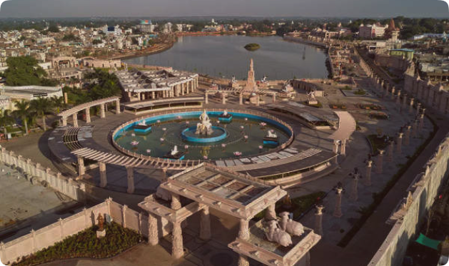

Mahakal Lok Phase 3:
All You Need to Know is here.
Mahakal Lok is an ambitious project to expand and beautify the Mahakaleshwar Temple corridor in Ujjain, Madhya Pradesh. The project is being implemented in three phases, with Phase 1 and 2 already completed. Mahakal Lok Phase 3 is the final phase of the project and is expected to be completed by 2025.
Key Features of Mahakal Lok Phase 3
Mahakal Lok Phase 3 will focus on the following key features:
- Development of the Maharajwada area: This area will be developed into a cultural and heritage hub, with plazas, fountains, and sculptures.
- Revamp of the Rudrasagar lake: The lake will be cleaned and beautified, with boating facilities and walkways.
- Development of the Mahakal Lok Path: This path will connect the Mahakal Temple to the Maharajwada area and the Rudrasagar lake.
- Construction of a new temple entrance: A new grand entrance will be constructed for the Mahakal Temple.
Team
Bhraman.